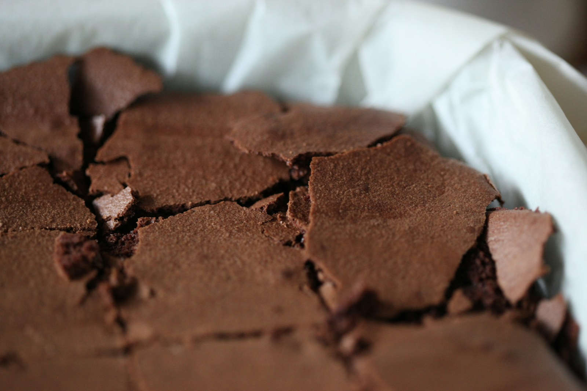

The recipe / No. 001
Chocolate
Brownies
A crackly top, a soft center, and just enough chocolate. The sort of bake that disappears one square at a time.
- Prep
- 15 min
- Bake
- 20–25 min
- Makes
- 9 squares
For the joy of making
A little flour. A little patience.
Something good to share.
01 / From the oven

The recipe / No. 001
A crackly top, a soft center, and just enough chocolate. The sort of bake that disappears one square at a time.
02 / A few good habits
Read the recipe first. Measure your ingredients. Give yourself a clear counter and a good place to begin.
Before you beginA brownie keeps setting after it leaves the oven. A little patience makes the difference between a crumb and a clean square.
The cooling pause
03 / The journal
Weekend Oven began with one chocolate brownie recipe and a simple idea: making something doesn't have to be complicated to feel special.
A little about us